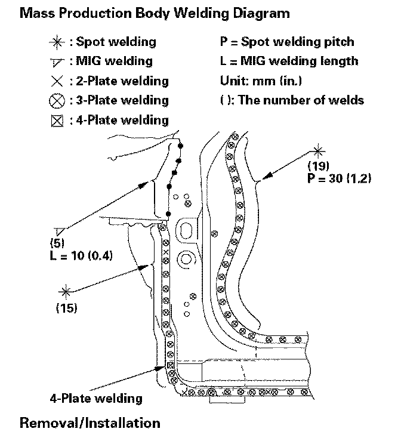
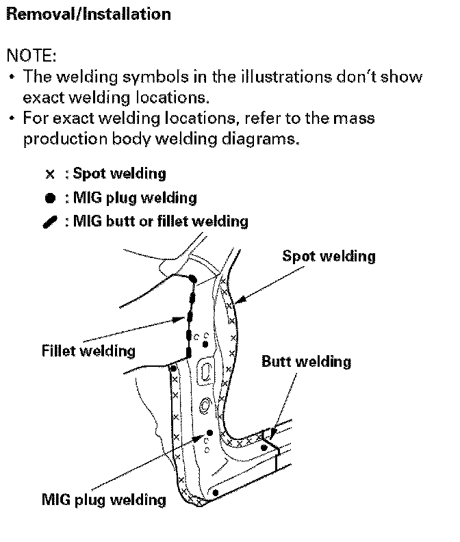
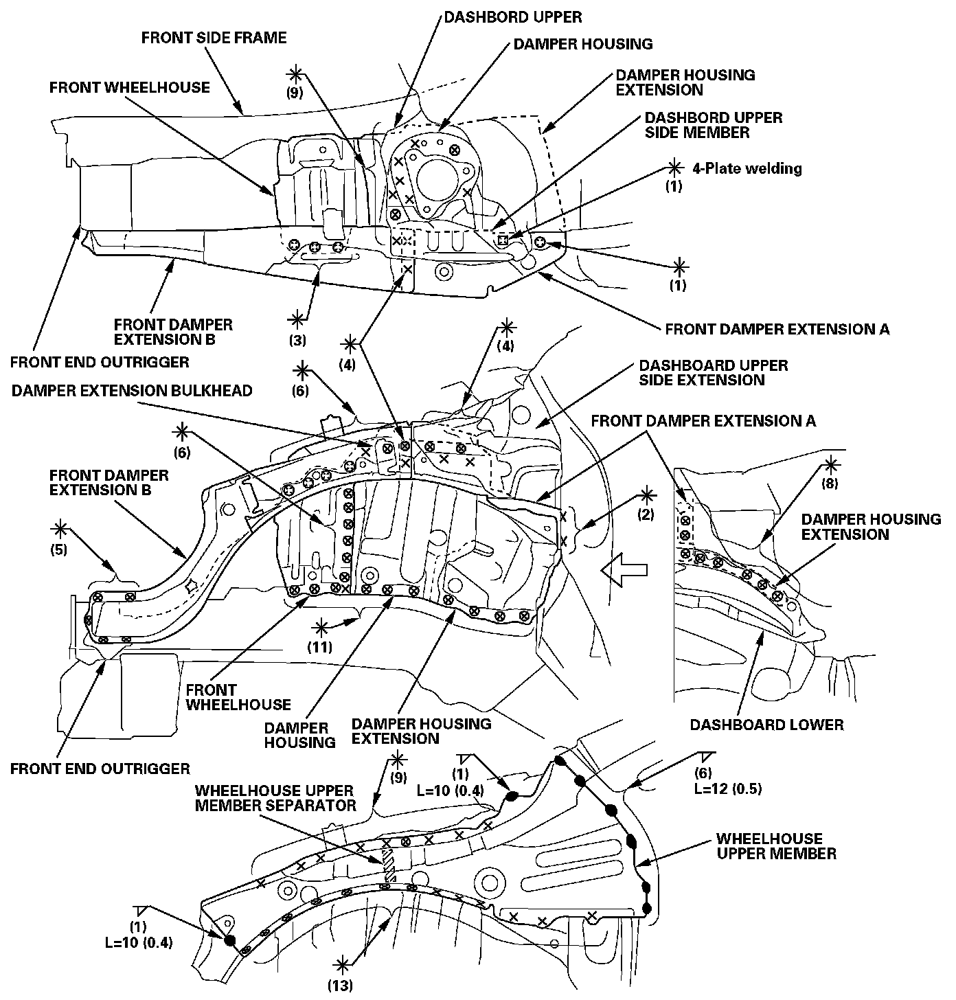
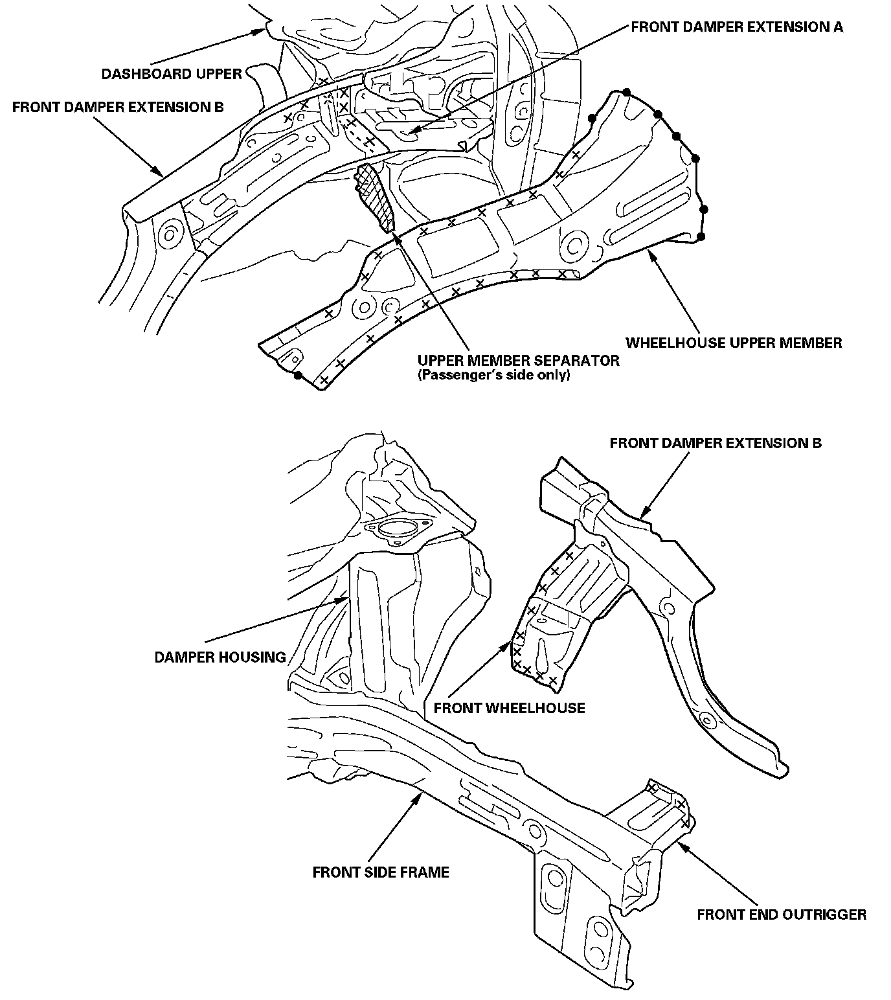
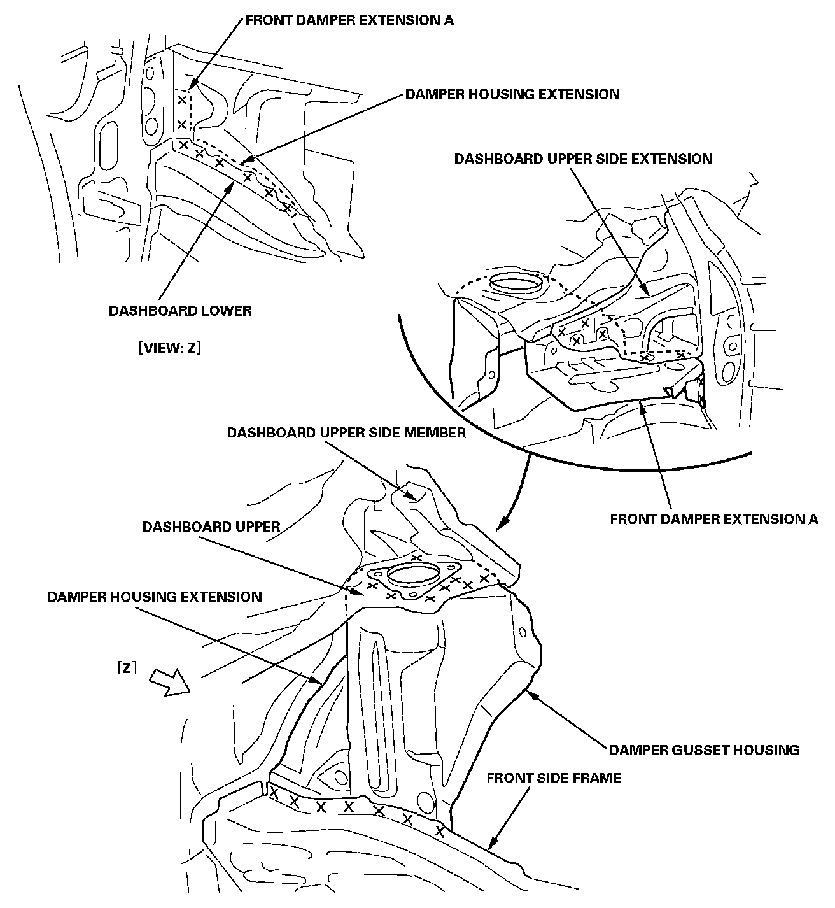
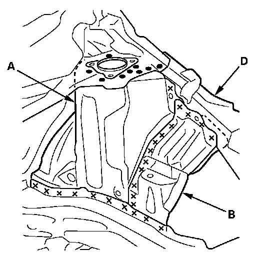
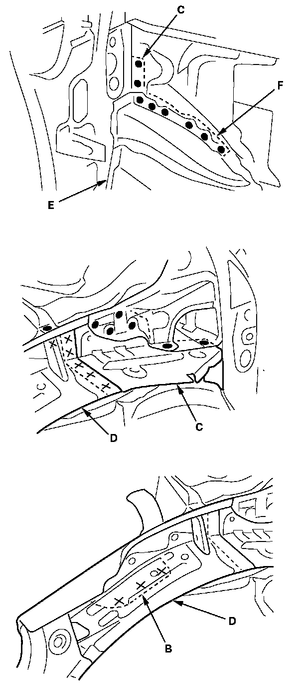
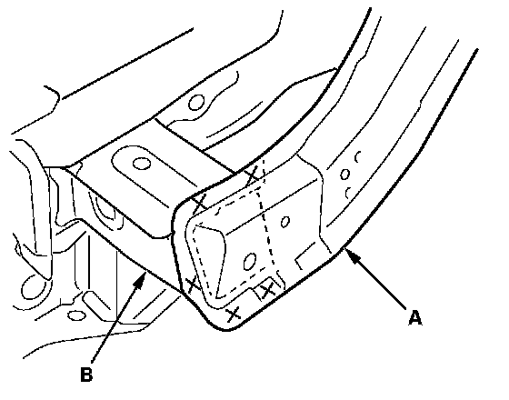
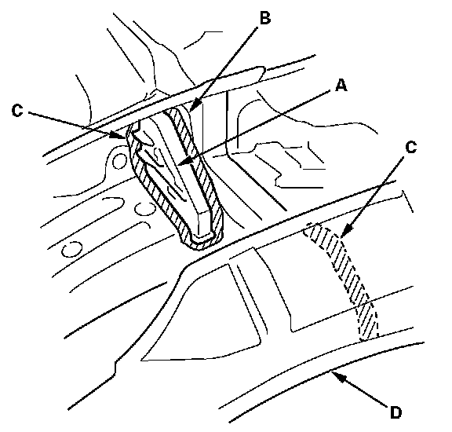
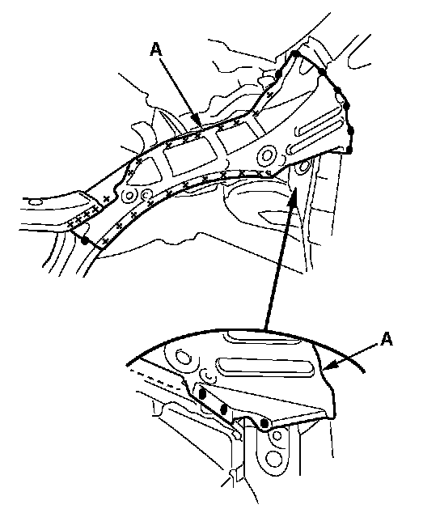

Strut Housing: Service and Repair
Front Wheelhouse/Damper HousingSymbols
The symbols in the mass production body welding diagrams and in the removal/installation carry the following meanings


Front Wheelhouse/Damper Housing - Mass Production:

Removal
- Remove the wheelhouse upper member, and replace the upper member separator.
- Remove front wheelhouse and front damper extension B as an assembly.

- Check the damper housing position, and check for damage.
- If necessary, replace the damper housing, damper housing extension and front damper extension A as an assembly.

Installation
1. Clamp the new damper housing, front wheelhouse, front damper extension, front bulkhead, and measure the front compartment diagonally.
2. Check the body dimensions.
- Engine compartment.
- Engine/transmission mount positions.
- Front damper extension position.
- Repair chart top view.
- Repair chart side view.
3. Tack weld the new parts and front bulkhead into position.
4. Temporarily install the front subframe, and check the front side frame position.
5. Temporarily install the hood, front fender, headlight, and front bumper, then check for differences in level and clearance. Make sure the body lines flow smoothly.
6. Do the main welding.
- Weld the damper housing (A), front wheelhouse (B), front damper extension A (C) and front damper extension B (D).
- From the passenger's side, plug weld the holes in the dashboard lower (E) and damper housing extension (F).


7. Weld the front damper extension B (A) and front end outrigger (B).

Passenger's side
8. Install the new upper member separator (A) to the damper extension bulkhead (B).
NOTE: Apply the sealer (C) all the way around the separator and inside of the wheelhouse upper member (D), without gaps.

9. Weld the wheelhouse upper member (A).
